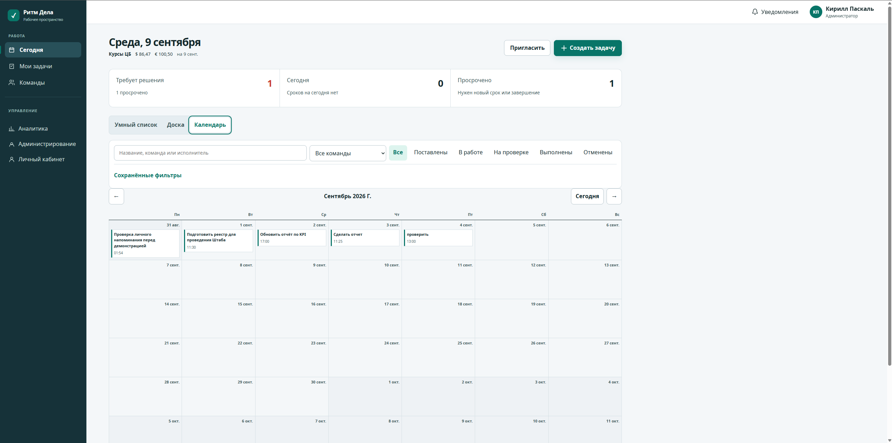

Ритм Делав эксплуатации
Таск‑менеджер для руководства компании, который работает даже когда внешние сервисы закрыты.
Платформа внесена в реестр Минцифры: во время «белых списков» доступ к ней сохраняется. Таск‑менеджер развёрнут на её домене: задачи с исполнителем, сроком и проверяющим, четыре роли, закрытый чат; веб, телефон, Telegram.
4роли
24/7при белых списках
566автотестов